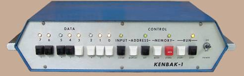
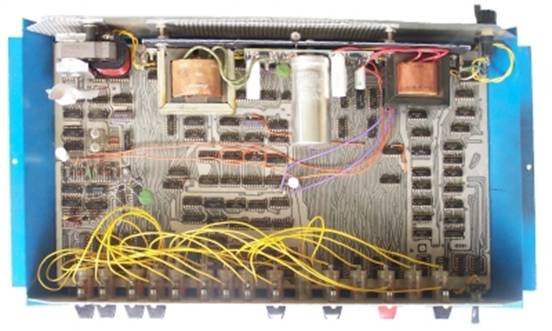
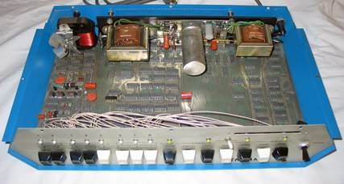

Kenbak-1
The first commercially available personal computer
The Kenbak-1 is considered to be the world's first "personal computer". Initial sales started in September of 1971 and it sold for $750. At the time, microprocessors weren't available yet. Therefore the logic consisted of small and medium scale integrated circuits mounted on one printed circuit board. Furthermore the input was entered with switches and the output displayed with light bulbs.1
John Blankenbaker
John Blankenbaker started as a physics freshman at Oregon State College with his first design of a computer device. Later he professionally designed an arithmetic unit for a business data processor. Some time in the late 1950s he began to think there could be simple computers which could be afforded by individuals. It was only in 1970, when he started thinking about a computer for personal use. He wanted the computer to be low cost, educational, and able to give the user satisfaction with simple programs.2
The Name
The name “Kenbak” was derived from the surname, Blankenbaker. The full name was too long so a search was made for a subset of the letters. The letter sequence "kenbak" appealed to John Blankenbaker, because it reminded him of the name "Kodak". George Eastman, the originator of that name, succeeded by making the camera affordable to every person. Finally the "-1" was added for future models.1
The Prototype
The prototype was very similar to the units shipped. But because of a few logic errors, a few jumper wires had to be added. Otherwise only some aesthetic details were changed. 1
Technical Information

The machine was based on discrete TTL chips.
It had 256 bytes of memory.
The instruction cycle time was 1 microsecond.
The actual execution speed averaged below 1000 instructions per second.
It was programmed by entering a machine code with switches.3